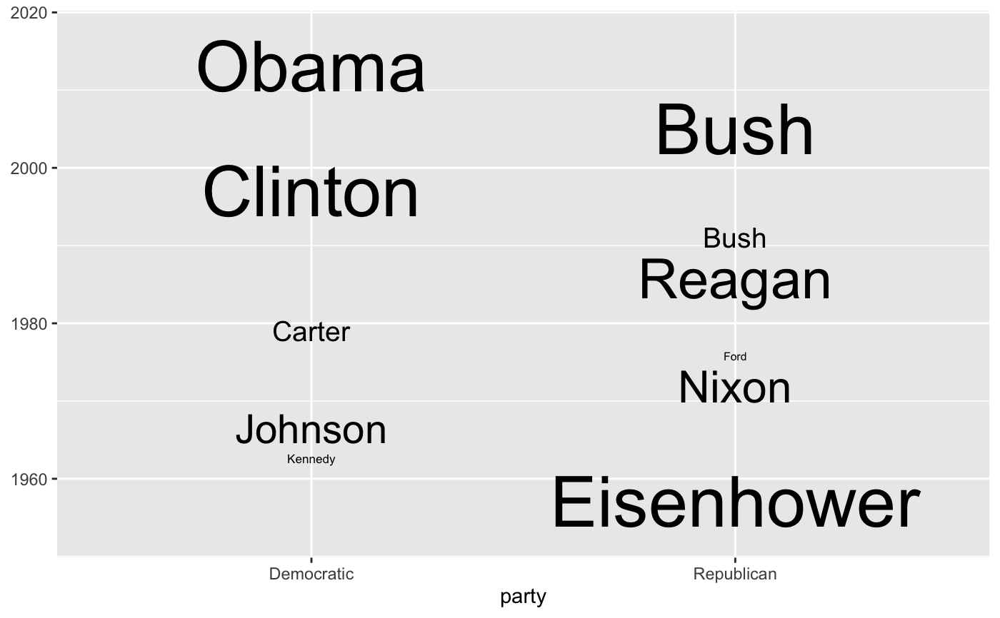

R/geom_bar_text.R, R/geom_fit_text.R
geom_fit_text.Rdgeom_fit_text() shrinks, grows and wraps text to fit inside a defined
box.
geom_bar_text() is a convenience wrapper around geom_fit_text() for
labelling bar plots generated with geom_col() and geom_bar().
geom_bar_text( mapping = NULL, data = NULL, stat = "identity", position = "identity", na.rm = FALSE, show.legend = NA, inherit.aes = TRUE, padding.x = grid::unit(1, "mm"), padding.y = grid::unit(1, "mm"), min.size = 8, place = NULL, grow = FALSE, reflow = FALSE, hjust = NULL, vjust = NULL, fullheight = NULL, width = NULL, height = NULL, formatter = NULL, contrast = NULL, outside = NULL, ... ) geom_fit_text( mapping = NULL, data = NULL, stat = "identity", position = "identity", na.rm = FALSE, show.legend = NA, inherit.aes = TRUE, padding.x = grid::unit(1, "mm"), padding.y = grid::unit(1, "mm"), min.size = 4, place = "centre", outside = FALSE, grow = FALSE, reflow = FALSE, hjust = NULL, vjust = NULL, fullheight = NULL, width = NULL, height = NULL, formatter = NULL, contrast = FALSE, ... )
| mapping |
|
|---|---|
| data, stat, position, na.rm, show.legend, inherit.aes, ... | Standard geom
arguments as for |
| padding.x, padding.y | Horizontal and vertical padding around the text,
expressed in |
| min.size | Minimum font size, in points. Text that would need to be
shrunk below this size to fit the box will be hidden. Defaults to 4 pt (8 pt
for |
| place | Where inside the box to place the text. Default is 'centre';
other options are 'topleft', 'top', 'topright', 'right', 'bottomright',
'bottom', 'bottomleft', 'left', and 'center'/'middle' which are both
synonyms for 'centre'. For |
| grow | If |
| reflow | If |
| hjust, vjust | Horizontal and vertical justification of the text. By
default, these are automatically set to appropriate values based on |
| fullheight | If |
| width, height | When using |
| formatter | A function that will be applied to the text before it is
drawn. This is useful when using |
| contrast | If |
| outside | If |
Except where noted, geom_fit_text() behaves more or less like
ggplot2::geom_text().
There are three ways to define the box in which you want the text to be drawn. The extents of the box on the x and y axes are independent, so any combination of these methods can be used:
If the x and/or y aesthetics are used to set the location of the box,
the width or height will be set automatically based on the number of
discrete values in x and/and y.
Alternatively, if x and/or y aesthetics are used, the width and/or
height of the box can be overridden with a 'width' and/or 'height' argument.
These should be grid::unit() objects; if not, they will be assumed to use
the native axis scale.
The boundaries of the box can be set using the aesthetics 'xmin' and 'xmax', and/or 'ymin' and 'ymax'.
If the text is too big for the box, it will be shrunk to fit the box. With
grow = TRUE, the text will be made to fill the box completely whether that
requires shrinking or growing.
reflow = TRUE will cause the text to be reflowed (wrapped) to better fit
in the box. If the text cannot be made to fit by reflowing alone, it will be
reflowed then shrunk to fit the box. Existing line breaks in the text will
be respected when reflowing.
geom_fit_text() includes experimental support for drawing text in polar
coordinates (by adding coord_polar() to the plot), however not all
features are available when doing so.
label (required)
(xmin AND xmax) OR x (required)
(ymin AND ymax) OR y (required)
alpha
angle
colour
family
fontface
lineheight
size
ggplot2::ggplot(ggplot2::presidential, ggplot2::aes(ymin = start, ymax = end, label = name, x = party)) + geom_fit_text(grow = TRUE)